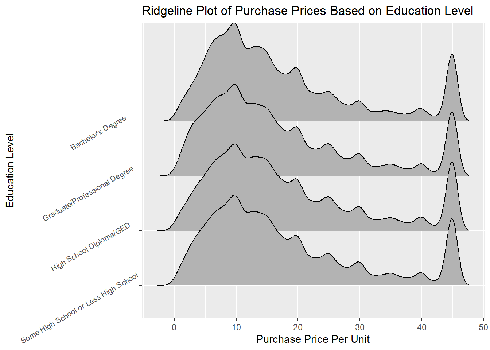
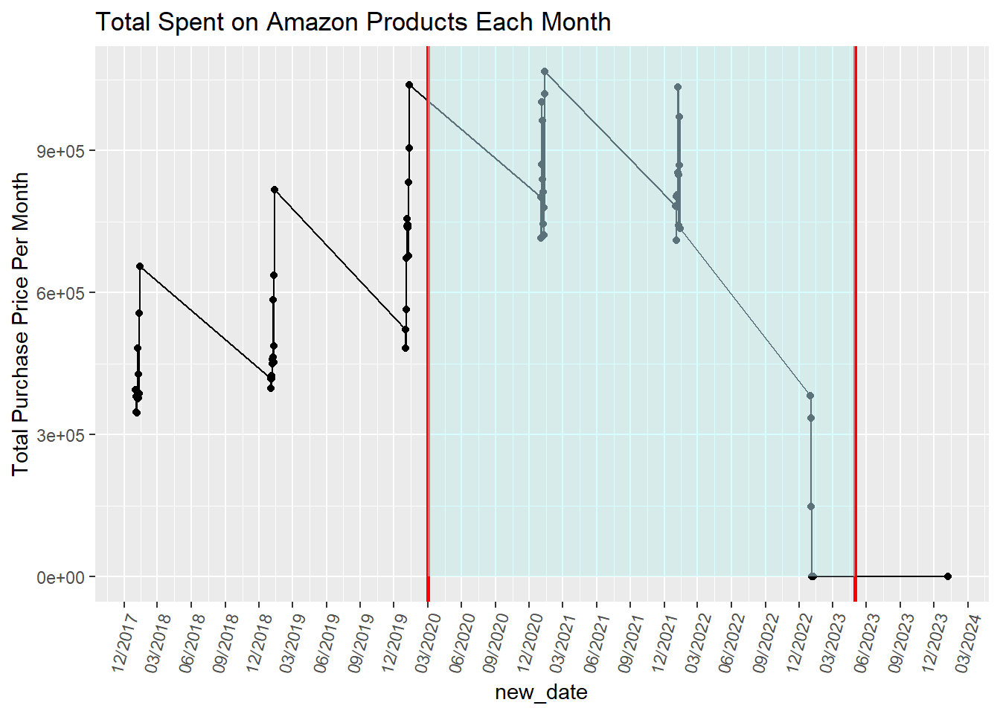

library(dplyr)library(ggplot2)library(maps)# Calculate the total number of purchases in each statetotal_purchases_by_state <- joined_df %>%group_by(`Q-demos-state`) %>%summarise(total_purchases =n()) %>%mutate(`Q-demos-state`=tolower(`Q-demos-state`)) %>%arrange(desc(total_purchases))# Load map data for statesstates <-map_data("state")# Join the purchase data with map datastates_purchases <- states %>%rename(`Q-demos-state`= region) %>%left_join(total_purchases_by_state, by ="Q-demos-state")# Plot the data on a mapggplot(states_purchases, aes(long, lat, group = group, fill = total_purchases)) +geom_polygon(color ="black") +scale_fill_viridis_c(option ="magma", na.value ="gray", direction =-1) +theme_minimal() +labs(title ="Total Amazon Purchases from 2018 to 2023 by State", fill ="Total Purchases")
We used a US state map to visualize which states made the most Amazon purchases and which had the least from 2018 to 2023. California had the greatest amount of Amazon purchases by a large margin while Texas had the second highest. We were not surprised that California had the most purchases, but we were surprised that Texas was second. A lot of the midwest states, such as Montana, North Dakota, South Dakota, and Wyoming had the least amount of Amazon purchases.
3.2 Grouped Bar Chart of Top 5 Categories Per Year
Code
library(RColorBrewer)# Convert Order Date to Date typepurchase$`Order Date`<-as.Date(purchase$`Order Date`, format="%Y-%m-%d")# Extract Year from Order Datepurchase$Year <-format(purchase$`Order Date`, "%Y")# Group by Year and Category to count purchasescategory_counts <- purchase %>%group_by(Year, Category) %>%summarise(purchases =n()) %>%ungroup()# Remove 'NA' categories and filter out the year 2024category_counts <- category_counts %>%filter(Category !="NA"& Year !="2024")# Get the top 5 most purchased categories for each yeartop_categories <- category_counts %>%group_by(Year) %>%top_n(5, purchases) %>%ungroup()# Order categories within each year by number of purchases (tallest to shortest)top_categories$Category <-factor(top_categories$Category, levels = top_categories %>%group_by(Year) %>%arrange(Year, desc(purchases)) %>%pull(Category) %>%unique())# Choose a qualitative color palettepalette <-brewer.pal(8, "Set2")# Create the grouped bar graphggplot(top_categories, aes(x = Year, y = purchases, fill = Category)) +geom_bar(stat ="identity", position ="dodge") +labs(title ="Top 5 Most Purchased Amazon Categories by Year",x ="Year", y ="Number of Purchases") +scale_fill_manual(values = palette) +theme_minimal() +theme(axis.text.x =element_text(angle =45, hjust =1))
This grouped bar chart shows the top purchases per year. For each year, books are consistently the top category purchased, followed by pet food. However, in 2022 and 2023, gift cards were no longer considered a top category and instead, medicine appeared. People also bought more nutritional supplements than shirts until 2021 and 2022, and then in 2023 nutritional supplements were more popular again.
3.3 Distribution of User’s Total Spending on Amazon
Code
# Calculate total spending per useruser_spending <- joined_df %>%mutate(Total_Spent =`Purchase Price Per Unit`* Quantity) %>%group_by(`Survey ResponseID`) %>%summarise(Total_Spent_Per_User =sum(Total_Spent, na.rm =TRUE))# Plot a histogram of total spending per userggplot(user_spending, aes(x = Total_Spent_Per_User)) +geom_histogram(binwidth =1000, fill ="blue", color ="black", alpha =0.7) +labs(title ="Distribution of Total Spending from 2018 to 2023 Per Account",x ="Total Spending (USD)",y ="Number of Accounts" ) +theme_minimal()
This histogram shows the distribution of user’s total spending over 5 years. The number of accounts is the frequency of Amazon users/accounts that spend that much over a total of 5 years. The majority of users spend less than $30,000 in 5 years, with the highest peak being $2,000 within 5 years. This histogram however is right skewed with some users spending almost $12,000 over the 5 year period. Knowing the distribution is skewed we may need to do something with our outliers when we use our data for our other visualizations.
3.4 Alluvial Diagram of Age, Amazon Category, and Income for 2023
Code
library(ggalluvial)# Filter for rows where "2023" is in the "Order Date"# and find the top 5 categories by frequencytop_categories <- joined_df %>%filter(grepl("2023", `Order Date`)) %>%count(Category, sort =TRUE) %>%slice_max(n, n =5) %>%pull(Category)# Filter the data for the top 5 categoriesalluvial_data <- joined_df %>%filter(grepl("2023", `Order Date`) & Category %in% top_categories) %>%select(`Q-demos-age`, Category, `Q-demos-income`) %>%filter(!is.na(`Q-demos-age`) &!is.na(Category) &!is.na(`Q-demos-income`))# Create the alluvial diagramggplot(alluvial_data,aes(axis1 =`Q-demos-age`, axis2 = Category, axis3 =factor(`Q-demos-income`, levels =c("Less than $25,000", "$25,000 - $49,999", "$50,000 - $74,999","$75,000 - $99,999", "$100,000 - $149,999", "$150,000 or more", "Prefer not to say")))) +geom_flow(aes(fill = Category)) +geom_stratum(width =0.6) +geom_text(stat ="stratum", aes(label =after_stat(stratum)), size =2.5) +theme_minimal() +labs(title ="Alluvial Diagram of Age, Category, and Income for 2023",x ="Variables",y ="Frequency") +scale_x_discrete(labels =c("Age", "Category", "Income")) +theme(legend.position ="top", # Move legend to the toplegend.title =element_blank(), # Optional: remove legend title for a cleaner lookaxis.text.x =element_text(angle =45, hjust =1), # Optional: tilt axis labelsplot.margin =margin(10, 10, 10, 10) # Reduce blank margins )

We saw the top categories in the bar chart so now we are using an alluvial diagram to see the flow between the demographics, age and income, and the top 5 categories to find any trends or patterns. The book category has the most flow with the younger age groups buying more books on Amazon. This doesn’t mean that younger people read more and older people do not, it just shows that for this study these younger participants are buying more books online through Amazon. The second most frequent purchase category is pet food and we can see people from ages 24-54 are the top customers and usually they have a higher income. It was interesting to see that medication was the most popular for users between 24 and 44 years old with medium incomes at $25,000 - $74,999. This graph gave more insight into the interaction between variables when looking at the top categories.
3.5 Mosiac Pairs Plot of Gender, Purchases Per Week, and Education
Code
library(vcd)survey =filter(survey, `Q-demos-gender`=='Female'|`Q-demos-gender`=='Male')survey =filter(survey, `Q-demos-education`!='Prefer not to say')survey =mutate(survey, `Q-demos-education`=ifelse(survey$`Q-demos-education`=="Some High School or Less High School" , "< High School", survey$`Q-demos-education`))survey =mutate(survey, `Q-demos-education`=ifelse(`Q-demos-education`=="Bachelor's degree", "Bachelors", survey$`Q-demos-education`))survey =mutate(survey, `Q-demos-education`=ifelse(`Q-demos-education`=="Graduate or professional degree (MA, MS, MBA, PhD, JD, MD, DDS, etc)", "Graduate", survey$`Q-demos-education`))survey =mutate(survey, `Q-demos-education`=ifelse(`Q-demos-education`=="Graduate/Professional Degree", "Graduate", survey$`Q-demos-education`))survey =mutate(survey, `Q-demos-education`=ifelse(`Q-demos-education`=="Some high school or less", "<High School", survey$`Q-demos-education`))survey =mutate(survey, `Q-demos-education`=ifelse(`Q-demos-education`=="High school diploma or GED", "High School", survey$`Q-demos-education`))unique(survey$`Q-demos-education`)
survey =mutate(survey, `Q-amazon-use-how-oft`=ifelse(`Q-amazon-use-how-oft`=="Less than 5 times per month", "<5 a month", survey$`Q-amazon-use-how-oft`))survey =mutate(survey, `Q-amazon-use-how-oft`=ifelse(`Q-amazon-use-how-oft`=="5 - 10 times per month", "5-10 a month", survey$`Q-amazon-use-how-oft`))survey =mutate(survey, `Q-amazon-use-how-oft`=ifelse(`Q-amazon-use-how-oft`=="More than 10 times per month", ">10 a month", survey$`Q-amazon-use-how-oft`))variables <-c("Q-demos-gender", "Q-amazon-use-how-oft", "Q-demos-education")# Filter the dataset to include only these variablesdata_for_mosaic <- survey %>%select(all_of(variables)) %>%na.omit() # Remove rows with NA values# Generate the mosaic plotpairs(table(data_for_mosaic), diag_panel =pairs_diagonal_mosaic(offset_varnames=-2.5),cex=1,upper_panel_args =list(shade =TRUE),lower_panel_args =list(shade =TRUE),main ="Mosaic Pairs Plot of Gender, Purchases Per Week, and Education")

To see if the variables have a strong association we used a mosaic plot. Gender and education levels were strongly associated. However, for our topic we are more interested in the association with how often the user purchases from Amazon a month (shopping frequency). When looking at all three variables together, they were not strongly associated. Then if we just look at gender and how often the user shops on Amazon, there appears to be more of an association compared to education level and shopping frequency.